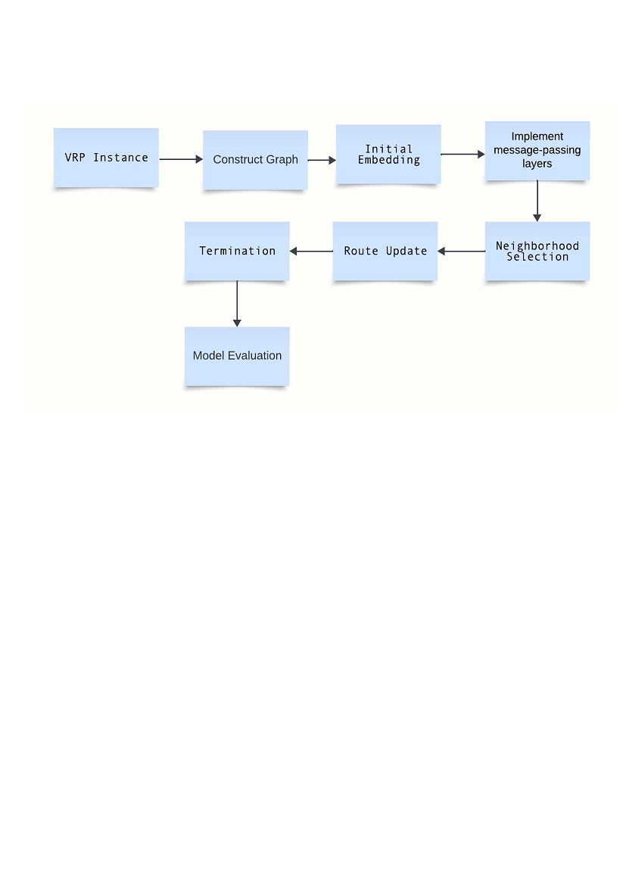

Enhancing a Vehicle Routing Problem Solver
through Graph Neural Networks in Neighborhood
Selection
Team Members:
Leo Lorence G
19NA3AI29
Ajay Ram Meena
19IE3AI18
Muhammed Haneen K P
19EE3AI17
1. Introduction:
The vehicle routing problem (VRP) is a combinatorial optimization and integer
programming problem that asks, "What is the optimal set of routes for a fleet of
vehicles to traverse to deliver to a given set of customers?
The Vehicle Routing Problem (VRP) addresses the efficient delivery operations of a
company with multiple vehicles and drivers servicing customers across a road
network. It aims to determine optimal routes for each vehicle, minimizing global
transportation costs while satisfying customer demands and operational constraints.
The road network is represented as a graph, and the objective functions vary, including
minimizing costs, vehicles, travel time variation, penalties, and maximizing profit.
The Vehicle Routing Problem (VRP) is widely acknowledged as an integer programming
problem and is classified as an NP Hard problem, meaning it is difficult to solve in
polynomial time. This categorization indicates that the computational complexity
increases exponentially as the problem size increases. To address this difficulty, there is
a widespread requirement for method yet fairly precise approximate solutions that are
suitable for practical applications

2. How interesting and recent is the topic?
Since the problem addresses a real word problem, making use of graph theory and
graph neural networks makes it more interesting. Also, the problem is NP hard, which
even makes it more interesting.
2.1 Real-World Relevance:
VRP effectively tackles the real-world obstacles encountered by delivery firms and
logistics operations, rendering it highly important in a society that is increasingly
dependent on the efficient transportation of products and services.
2.2. Complexity and NP-Hard Nature:
The Vehicle Routing Issue (VRP) is categorized as an NP-Hard issue, meaning that as
the size of the problem rises, it becomes increasingly difficult to identify the best
possible solutions using computer methods. Given the complexities involved, it is
essential to investigate novel algorithms and optimization strategies.
2.3 Diverse Applications:
The problem finds applications in various industries beyond traditional logistics,
including waste collection, school bus routing, and even in fields like healthcare for
optimized patient care routes.
2.4 Graph Neural Networks (GNNs)
The incorporation of graph neural networks (GNNs) brings a modern and promising
dimension to solving the Vehicle Routing Problem (VRP). Graph neural networks
(GNNs) take advantage of the arrangement of the road network, enabling the
development of more advanced and situation-aware solutions.
The utilization of graphs to represent sub-problems of VRP and the application of GNNs
to optimize these sub-problems introduces a level of complexity. This not only

demonstrates the flexibility of graph-based models but also emphasizes a new
approach for addressing the complexities of VRP.
3. Understanding the problem
Before understanding the problem, let’s understand the terminology we are going to
use further in this blog:
"Shipment" is defined by the place of delivery and the particular specifications
that a vehicle needs to meet. Extensions could include things like more pickup
locations, time windows, and other pertinent information.
"Route" is an orderly flow of shipments that starts and ends at the depot.
Notably, a route could pass through the depot more than once, which makes it
easier to fill-up and distribute fresh cargo.
“Trip ” A segment of the route that starts and ends at a depot without requiring a
stop at the depot in between is referred to as a "trip."
A vehicle's " capacity " refers to its transport capacity, or the most weight it is
able to support.
Time windows: An enhancement to the previously established VRP, " time
windows, " adds new characteristics to shipments. By defining two time intervals
during which deliveries must take place, they improve the accuracy of the
logistical planning procedure.
3.1 VRP as a Graph Problem:
A vehicle routing problem can be represented as a graph problem .
Let G = (V, E), where V denotes locations for a vehicle's visits
V = 0 signifies the depot and
Vertices i = 1, ..., n represent customers with known demands
Each edge between vertices i and j carries a non-negative cost, c ij , symbolizing the
travel cost from vertex i to vertex j.
The VRP involves determining a set of k cycles , each representing a vehicle route (with
one trip per route) . Every circuit incurs a cost c k , defined as the sum of costs along its
edges. The solution must satisfy the following conditions:

Every circuit must visit vertex 0, which is the depot.
Each vertex j � V \ 0 is visited precisely once by a circuit.
Any collection k meeting these conditions is a solution. An optimal solution is one
where the sum k for all circuits is minimal.
3.2 VRP with Capacity and Time Windows (VRPTW and CVRPTW)
Capacity is a vehicle’s transport capacity. In graph theory, we represent this with
below conditions
Let d j : Each customer have a non-negative demand; then the sum of the
demands of vertices on the same circuit must not exceed the vehicle capacity
C.
k : j d j < C k for j cir k
Cir k is a member of the collection of sample circuits forming the solution k.
Time window: T ime windows in the Vehicle Routing Problem are strict delivery
timeframes. Though a vehicle can arrive early, waiting until the window starts suffers
extra virtual cost, highlighting the importance of precise scheduling
3.3 VRP as Business Problem
Adjustment have been made in values to reflect real world problem
C ij : Traveling from vertex i to j is represented by the sum of business costs
(distance, travel time, etc.) and penalties for violation of business rules (delayed
shipments, unmet requirements for the conditions of the shipment, waiting time, etc.)
The reason we're changing the values is because the way we describe the problem
matches the challenges we see in real-world logistics and transportation
In logistics planning, the depot has different types of vehicles, each with specific
abilities and limits. Vehicles can make multiple trips due to their limited numbers. Thus,
a circuit c k from the graph theory definition of a VRP is one trip of the vehicle , and its
route can consist of multiple trips.
4.
Logistic Planner
The research's emphasis on integrating with the Logistics Planner and its optimizer tool
from Dassault Systèmes is described in this line. Through iterative refinement of initial
route assignments, the optimizer improves Vehicle Routing Problem (VRP) solutions.

Route assignments are generated and received during the process, creating a loop for
ongoing development
Source: Graph Neural Networks in Neighbourhood Selection for a Vehicle Routing Problem solver
4.1. The optimizer receives the input of a VRP, consisting of a depot and shipments.
4.2. The construction phase, which assigns all shipments to routes initially, is the first
stage of processing the input. While a reasonable allocation can be tried straightaway,
its optimality is not guaranteed. In this case, a virtual start-up fee is established and will
be reduced in the following stages. Virtual costs are defined by business costs and
penalties for violating business rules. It consists of
1)
Business cost per route: the actual expenses involved in operating the route This
comprises, but is not limited to: - The length of the trip, including driving,
loading, and unloading times, as the driver's time is also compensated; - A
function of the route's distance travelled, as fuel expenses are involved;
2) Breaking a business regulation (per route): Overbooking, routes longer than a
driver's shift, waiting time, and so forth
3) Breach of business regulation (per shipment): unexpected shipping: a heavy
fine is necessary because there are no commercial expenses associated with an
unexpected shipment, therefore there is no reason to arrange one; - Delayed
shipment;

4) Additional expenses : Situational expenses could be included. CO2 emissions
and electrical vehicle battery depletion are two examples.
4.3. Next, the improvement phase starts. LP has an optimizer algorithm to minimize that
virtual cost. A subproblem is the small number of shipments that are close to one
another. Its input is a neighborhood, which is made up of the following:
A shipment chosen from the problems around which the subproblem is
to be developed is called an anchor . A heuristic is used to produce
anchors, and it has a high probability that all shipments will eventually fall
within a neighborhood.
The nearest shipments are chosen to create a neighborhood from an
anchor (notice that "close" here refers to both physical distance and
delivery time). A shipment's whole route is added when it enters a
neighborhood. A neighborhood is made up of one or more full pathways
as a result.
During optimization, a neighborhood, representing a subset of shipments, undergoes
algorithmic refinement in isolation. The optimizer exclusively focuses on this localized
context. The solution obtained for each sub-problem seamlessly integrates back into
the overarching Vehicle Routing Problem, improving the global result by reassigning
affected shipments and enhancing efficiency iteratively
4.4 Negibhourhood selection
The goal of the project is to improve the optimizer of Dassault Systèmes DELMIA by
concentrating on neighborhood selection instead of changing the resource- and time-
intensive optimizer. The procedure entails using LP to generate neighborhoods and
assessing each one's potential for optimization prior to optimization. By comparing their
capacities, the most promising neighborhood for optimization is to be selected.
Because we do not use heuristic estimation, our method guarantees good selection
based on differences seen between neighborhoods. The process entails creating a
number of neighborhoods, evaluating their potential for optimization, and deciding
which is the best for additional optimization within the parameters of the study.
Source: Graph Neural Networks in Neighbourhood Selection for a Vehicle Routing Problem solver
a) Each time step starts with the current solution X. Circles represent shipment nodes,
blue lines stand for the path a vehicle takes between two shipments, and the red star
marks the depot.
b) We represent a route as a point (diamond) for simplicity. Note: All routes contain
the depot (at least twice).
c) Selecting neighborhoods (which can vary in size and how much they overlap).
d) selecting a subproblem S (yellow).
e) We feed S into the sub-optimizer to get a new sub-solution, X’S. The red edges are
updated by the sub-optimizer.
f) We update X to the new solution X0 with X’S, then repeat (b)-(f). The solution
achieved at f is the new (a)
5. Graph-representation
The process involves iteratively building a graph for Graph Neural Network (GNN)
application in neighborhood selection. Graph development occurs in phases, increasing
in complexity gradually to avoid unnecessary processing without proven model
improvement. Each phase is evaluated based on a simulated real-world problem, and
subsequent phases introduce expansions. If an expansion enhances performance, it is
retained; otherwise, it is discarded, with special consideration for critical expansions.
The graph consists of these nodes type and edges
Shipment Nodes
Deliveries vehicles need to make and the depot
Trip Nodes
Trips vehicles make from the depot and back to make deliveries
Route Nodes
Full routes (one or more trips) of vehicle throughout a day
The graph will have these edges
Path Edges
The travel of a vehicle from one location to the next (between Shipment
Nodes)
Shipment-Trip
Connecting Shipment Nodes to the Trip Node representing the trip those
Edges
shipments are part of
Trip Edges
Interconnectivity between Trip Nodes
Trip-on-Route
Connecting sequential Trip Nodes that are on the same route
Edges
Trip-Route Edges
Connecting Trip Nodes to the Route Node representing the route those
trips are part of
Route Edges
Interconnectivity between Route Nodes
6. Guidelines for Implementation
The flowchart below roughly shows how the implementation of GNN in the VRP solver
for neighborhood selection works.

6.1 Implementation process
The process begins by loading the Vehicle Routing Problem (VRP) instance data. This
data includes essential information such as the location of the depot, customer
locations, and any constraints associated with the problem. This step serves as the
foundational input for the process. Once the VRP instance data is loaded, the next stage
involves constructing a graph representation of the problem. In this graph, nodes
represent various locations, including the depot and customer sites, while edges signify
the distances or costs associated with traveling between these locations. Setting up
and initializing the GNN model, including architecture and parameters, is also done
here.
Initial node embeddings are established in the next step. In the beginning, these
embeddings turn the nodes' properties, like their location and what customers want,
into vectors that the GNN can use. Graph nodes can share information with each other
using GNN message-passing layers. This lets them update their embeddings by
learning from neighboring nodes. This process helps the GNN understand the
connections between locations and their associated costs.
Next is the neighborhood selection step. Here, the GNN utilizes its embeddings to
select the next customer node that a vehicle should visit. This selection is not arbitrary

but takes into account various constraints, such as the vehicle's capacity and time
windows for customer visits. Following the neighborhood selection, the vehicle's route
is updated based on the chosen customer node. This step also involves updating
relevant information, such as the remaining vehicle capacity and other factors critical to
the VRP solution. The process includes a termination check to determine whether all
customers have been visited. If not, the optimization returns to the neighborhood
selection step, and the process iterates until all customers are included in the solution.
When the optimization process is done, the system checks the solution by figuring out
the total cost of the Vehicle Routing Problem (VRP) solution. This is done by taking into
account things like travel distance, time, and vehicle utilization. It then conducts a
convergence check to determine if the Graph Neural Network (GNN) model has
reached a stable and optimal solution. If not, it may return to the neighborhood
selection step for further adjustments. Finally, the system generates the output solution,
which consists of optimized vehicle routes tailored to the VRP instance's constraints
and requirements.
6.2 Things to note when implementing
To use Graph Neural Networks (GNN) to solve the Vehicle Routing Problem (VRP), you
need to take a complete approach that includes preprocessing the data, choosing the
GNN model, tuning the hyperparameters, collecting data, and evaluating performance.
Data Preprocessing for GNN-Based VRP Solver:
Data preprocessing lays the foundation for GNN-driven VRP solvers. This crucial phase
involves transforming raw VRP data into a suitable graph representation. A careful
examination of the data structure is essential to understanding the interplay between
locations, customer demands, and various constraints. Defining meaningful
relationships between nodes and edges within the graph and accurately mapping
customer data onto this representation is imperative. The success of GNN-based
solutions depends on how accurate this graph is, and it is important to make sure that
all the data and validation are correct before applying the model.
GNN Model Selection for VRP:
The choice of a GNN model is a key determinant of success in VRP optimization. Model
selection should consider factors such as expressive power, scalability, and
interpretability. The chosen GNN model needs to be able to work well with the unique
features of each VRP instance so that it can understand the connections between
nodes and edges. Additionally, the complexity of VRP instances plays a vital role in
model selection, as it significantly impacts optimization objectives.
Data Acquisition and Synthesis:
Training a GNN model for VRP necessitates a comprehensive dataset with known
optimal solutions. Real-world data acquisition can be challenging, necessitating the

generation of synthetic datasets or the use of publicly available ones. This approach
ensures that the GNN model can learn and optimize VRP solutions, even when real-
world data is scarce or unavailable.
Hyperparameter Tuning for Optimal Performance:
The fine-tuning of hyperparameters, such as the number of layers and learning rates, is
a pivotal phase in the VRP optimization process. This iterative process has a significant
impact on the GNN model's performance and is essential to achieving optimal results.
Convergence Criteria for Effective Solutions:
Determining when a GNN-based solution has reached convergence is a complex task.
Well-defined convergence criteria are essential to prevent the waste of computational
resources on non-productive iterations. These criteria serve as a guide to navigate the
iterative landscape of GNN-based solutions, ensuring efficiency and effectiveness in
solving complex problems like VRP.
Performance Evaluation and Comparison:
After implementing GNN-based neighborhood selection for VRP, performance
evaluation becomes vital. Key factors such as solution quality, computation time, and
scalability must be considered. Furthermore, comparing the GNN-based approach to
conventional techniques like Large Neighborhood Search (LNS) is crucial. This
comparison helps us figure out how useful and effective the GNN-based solution is and
whether it has any benefits, such as better solution quality, shorter computation times,
or better scalability when solving VRP instances.
In conclusion, the application of GNNs in VRP solvers requires a well-rounded
approach that covers multiple factors. These steps collectively contribute to the
development of effective solutions for one of the most challenging problems in logistics
and operations research. By carefully navigating these stages, we can harness the
power of GNNs to address real-world VRP challenges and achieve superior routing and
logistics outcomes.